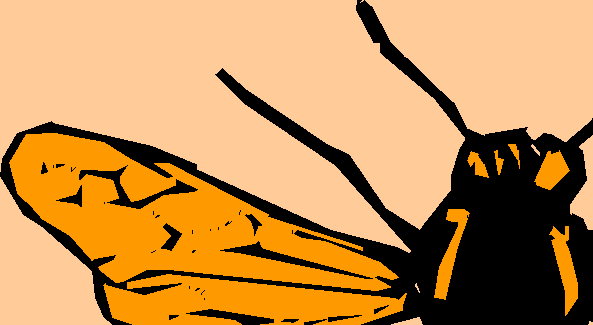

You’re viewing an archive of outdated material. Visit The Web Standards Project’s updated site to learn about our current mission.
| action | mission | members | resources |
Love it, hate it, talk about itWEB BUILDERS: Tired of hacks and versioning? Write valid markup and send 4.0 browser users to this page, or your own Browser Upgrades page. A Tips Page is available to assist you. W3C CERTIFIED KOSHER MARKUP |
REACTIONTalked aboutThe Browser Upgrade campaign has been widely reported by the Internet press, endorsed by Wise Women and Web Review, cautiously or fervently embraced by a growing number of independent and commercial developers, and soundly denounced by 1,000 Slashdot readers, most of whom had not actually read it. It has also earned a nod from the W3C Quality Assurance Activity board. Talk about itThe pros, cons, and gotchas of the WaSP Browser Upgrade campaign are now being discussed in ALA forums 49 and 52 and at Metafilter. If you want to talk about the campaign (and we hope you do), please do so in one of these forums. Please do not keep writing directly to WaSP members. After personally replying to over 1000 emails, one WaSP member is now being kept in a dark, quiet room at the advice of his physicians. |
||
|  | |||